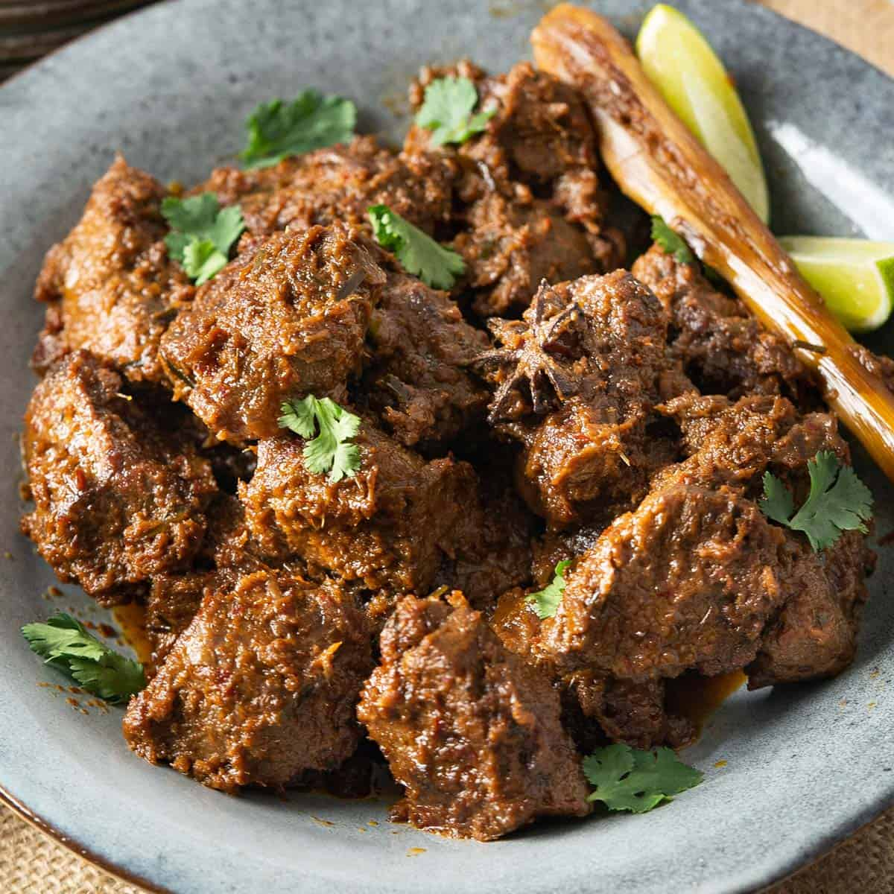

Beef Rendang

History
The origin of Rendang could be traced back to the Indian merchants, who
brought their food to Indonesia which was adapted by Minang people as
gulai.
Minang people cooked this gulai further to prepare kalio. The cooking
process was then continued until it thickened and became rendang.
Ingredients
- Boneless beef short ribs
- Coconut milk
- Kaffir lime leaves
- Spices (fresh cinnamon, cloves, star anise, and cardamom)
- Tamarind juice
- Kerisik
Steps
-
Chop the spice paste ingredients and then blend in a food processor
until fine.
-
Heat the oil in a stew pot, add the spice paste, cinnamon, cloves, star
anise, and cardamom and stir-fry until aromatic. Add the beef and the
pounded lemongrass and stir for 1 minute.
Add the coconut milk, tamarind juice, water, and simmer on medium heat,
stirring frequently until the meat is almost cooked.
-
Add the kaffir lime leaves, kerisik (toasted coconut), sugar, or palm
sugar, stirring to blend well with the meat.
-
Lower the heat to low, cover the lid, and simmer for 1 to 1 1/2 hours or
until the meat is really tender and the gravy has dried up. Add more
salt and sugar to taste. Serve immediately with steamed rice and save
some for storage.
Back